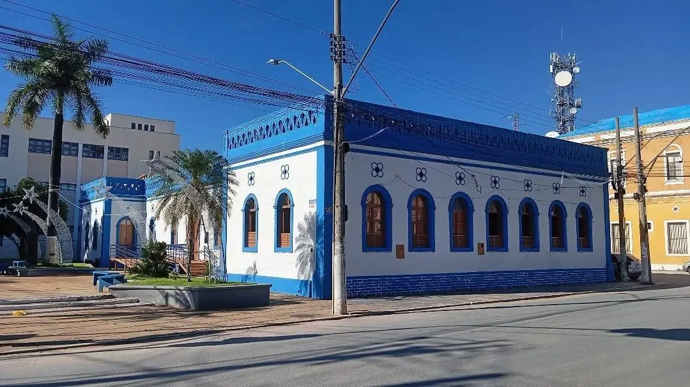

Sobre nós
Somos uma equipe de estudantes do curso de Bacharelado em Sistemas de Informação no Instituto Federal do Norte de Minas Gerais (IFNMG) - Campus Januária.
Nosso foco é a aplicação técnica e o desenvolvimento de soluções funcionais. Aproveitamos a excelência do ensino da nossa instituição para transformar teoria em prática, criando ferramentas digitais que resolvem problemas reais.
O Projeto
O GuiaJanu é o resultado do projeto acadêmico "Aplicações de Tecnologia da Informação para o Desenvolvimento do Turismo em Januária/MG".
Desenvolvido durante a disciplina de Unidade Curricular de Extensão, o portal foi criado com um propósito claro: usar a tecnologia da informação para organizar e facilitar o acesso a dados sobre a região. Mais do que um simples catálogo, este projeto funciona como um ambiente prático onde nossa equipe exercita o desenvolvimento web, a estruturação de sistemas e a entrega de um produto de software útil para a comunidade.
Nossa Equipe
Conheça os desenvolvedores por trás do GuiaJanu